Confronto con V49F locale congelata. V48 pubblicata invariata. Nessuna nuova submission.
Replay esposto 106843637: 719/719 azioni V48 riprodotte anche con sonde offline. Le sonde provano la preparazione senza il solo filtro del percorso, nello stato dopo le assegnazioni reali. Non sono prove di redditività o di miglioramento della partita.
| Giorno | Visite sondate | Fattibili senza filtro | Slot PASS con almeno una visita fattibile |
|---|---|---|---|
| 12 | 46 | 26 | 8 |
| 13 | 71 | 22 | 8 |
| 14 | 21 | 7 | 6 |
| 15 | 204 | 110 | 11 |
| 29 | 242 | 28 | 10 |
D12–D15 restano aperti. D29 richiede di distinguere risorse nel deposito, prelievi già impegnati e grano trasportato dai singoli lavoratori. Più manovali non rendono accessibile il grano già assegnato ad altri.
| Variante | Coppie | Δ cassa | Δ PASS | Δ quota pp | Δ MOVE | Gate non superati |
|---|---|---|---|---|---|---|
| v50a | 1 | 0.0 | 0 | 0.0 | 0 | pass_absolute, pass_share |
| v50b | 1 | 0.0 | 0 | 0.0 | 0 | pass_absolute, pass_share |
| v50c | 1 | 0.0 | 0 | 0.0 | 0 | pass_absolute, pass_share |
| v50d | 1 | 0.0 | 0 | 0.0 | 0 | pass_absolute, pass_share |
| v50e | 1 | 32.0 | 3 | 0.0414 | -2 | pass_absolute, pass_share |
| v50f | 1 | 32.0 | 3 | 0.0414 | -2 | pass_absolute, pass_share |
| v50g | 1 | 0.0 | 0 | 0.0 | 0 | pass_absolute, pass_share |
| v50h | 3 | 214.0 | -47.333 | -0.5619 | 1.333 | move, services, obligations |
| v50i | 1 | -9.0 | 30 | 0.4139 | -16 | pass_absolute, pass_share, cash_mean |
| v50j | 3 | 143.333 | -52.333 | -0.6351 | 6.333 | move, services, obligations |
| v50k | 3 | 40.667 | -37.333 | -0.4338 | 7.333 | move |
A–D e G esplorano certificati conservativi; E modifica il packing dei percorsi con scorte condivise; F combina E e D. H certifica servizi biologici e raccolte, escludendo lavoro facoltativo sul fertilizzante e usando il vincolo di rientro ereditato. I combina H con la rimozione della raccolta facoltativa; J combina H ed E; K combina H, E e I. Il certificato indica una distribuzione possibile e non obbliga il dispatcher a eseguirla: i replay verificano l’esito reale.
| Seed | Posto | Δ cassa | Δ PASS | Δ MOVE |
|---|---|---|---|---|
| 180903001 | 0 | 199.0 | -74 | 20 |
| 180903002 | 0 | 100.0 | -74 | 20 |
| 180903003 | 0 | 131.0 | -9 | -21 |
| Gate | Esito |
|---|---|
| complete | SUPERATO |
| pass_absolute | SUPERATO |
| pass_share | SUPERATO |
| move | NON SUPERATO |
| cash_mean | SUPERATO |
| cash_cases | SUPERATO |
| losses | SUPERATO |
| escapes | SUPERATO |
| services | NON SUPERATO |
| obligations | NON SUPERATO |
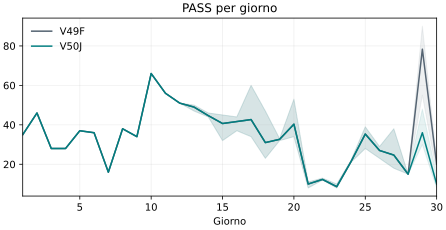
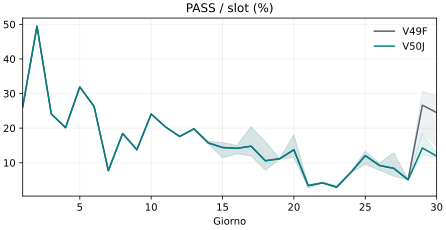
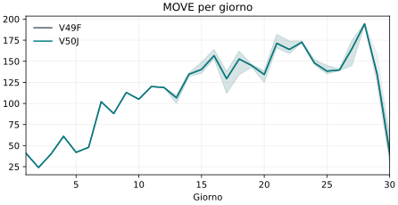
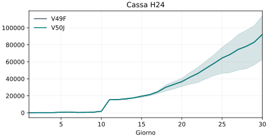
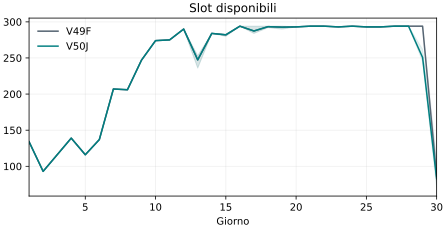
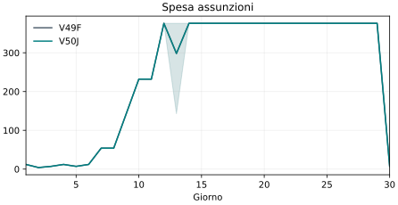
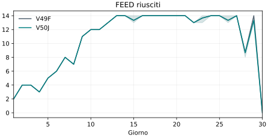
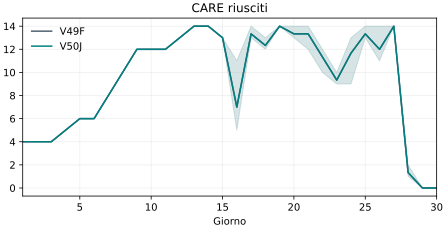
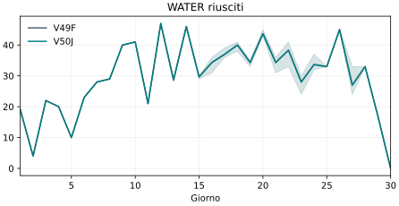
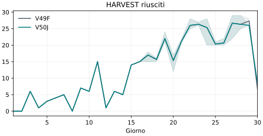
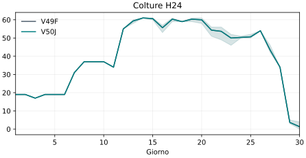
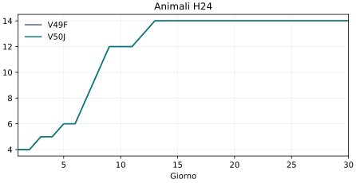
| Variante | Seed | Posto | Chiamate | Esito | Massimo s | Overage s |
|---|---|---|---|---|---|---|
| v49f | 180903001 | 0 | 719 | True | 3.811 | 18.109 |
| v49f | 180903001 | 1 | 719 | True | 4.036 | 20.296 |
Le matrici comportamentali usano actTimeout=120. Le prove runtime sono seriali, con actTimeout=1 e overage standard del motore. Nessuna equivalenza garantita con l’hardware Kaggle. I posti non sono repliche indipendenti. Protocollo · Diagnosi · Dati e deficit biologici per caso.